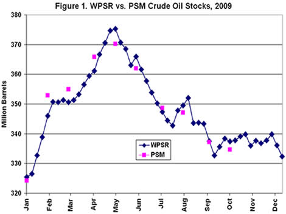

Released on January 6, 2010
(Next Release on January 13, 2010)
EIA’s Petroleum Supply Data: Variations between Weekly and Monthly Survey Results
The Energy Information Administration (EIA) publishes oil supply and demand data on both a weekly and monthly basis. Weekly data are published in the Weekly Petroleum Status Report (WPSR) while monthly data are published in the Petroleum Supply Monthly (PSM). Typically, the WPSR data for a given week is posted on EIA’s web site the following Wednesday morning, and the PSM data for a given month is posted about 8 weeks after the end of that month.
The WPSR provides timely, key information on oil market patterns, but its data are not as detailed, or as accurate, as that contained in the PSM. In many instances, there are differences between the PSM and WPSR data covering the same month, arising primarily from differences in reporting periods, the scope of the data collections, and the use of sampling methodology in the preparation of the WPSR data.
Reporting period.
The WPSR survey forms collect data for the 7-day period ending at 7:00 a.m. on Friday of the reporting week. The PSM survey forms collect data for the calendar month ending at midnight (12:00 a.m.) on the last day of the reporting month. The periods measured by both data series do not correspond exactly due to the differences in cut-off times, even if on the same day.
Data scope.
The WPSR survey does not collect all the data needed for the calculation of products supplied, which is defined as field production, plus refinery production, plus imports, plus unaccounted for crude oil, minus stock change, minus crude oil losses, minus refinery inputs, minus exports. Products supplied serves as a proxy for petroleum product demand. Weekly production1 data are collected only for motor gasoline, distillate fuel oil, kerosene-type jet fuel, residual fuel oil, and propane, and there is no weekly inventory data for "other oils." Therefore, both weekly production for the remaining aggregate products and the inventory of "other oils" are estimated based on historical monthly data in the calculation of weekly products supplied. Weekly export data also are not collected, so a model estimate is used.
The PSM survey, on the other hand, includes data on production and inventories of all petroleum products, which are analyzed in conjunction with export data collected and provided to EIA by the U.S. Bureau of the Census. Thus, published weekly products supplied contains more estimated components than published monthly products supplied.
Sampling.
Whereas the PSM surveys collect data from all companies and facilities involved in the primary supply and distribution system for U.S. petroleum products, the WPSR surveys collect data only from a sample of U.S. refiners, importers, terminals, and pipelines. The WPSR sample is selected and measured against the universe of PSM reporting companies. PSM companies are ranked from largest to smallest by reported volumes and added to the WPSR sample until the total volume reported by the sampled companies reaches 90 percent of the PSM total for that product, supply type, and geographic region. The remaining 10 percent is estimated.2 Estimation of the data for non-sampled companies necessarily entails some degree of sampling error.
Non-sampling errors also contribute to differences in the survey results. Non-sampling errors (such as non-response and edit or processing errors) are present in both PSM and WPSR data collections, but measurement errors may be more frequent and larger in the weekly surveys, given that WPSR respondents sometimes have to provide estimates because their accounting systems lag behind the weekly data collection schedule.
While there are differences between WPSR and PSM data and methods, the two series typically produce relatively close estimates and reflect the same basic trends over time, as shown in the figures below for stocks. In summary, the WPSR estimates provide accurate and precise early indicators of PSM data patterns.

U.S. Average Gasoline Price Jumps Six Cents
The U.S. average price for regular gasoline increased six cents to $2.67 per gallon, $0.98 higher than the price a year ago. Prices rose in all regions of the country. On the East Coast, the average went up a nickel to $2.65 per gallon. The largest increase occurred in the Midwest where the price jumped eight cents to $2.64 per gallon. On the Gulf Coast, the average rose six cents to $2.53 per gallon. The smallest increase and the lowest regional price were in the Rocky Mountains, where the average price moved up a penny to $2.51 per gallon. On the West Coast, the average increased four cents to $2.90 per gallon. The average in California increased over a nickel to $2.99 per gallon.
The national average price for diesel fuel gained nearly seven cents to settle at $2.80 per gallon. The average is now $0.51 per gallon higher than last year at this time. Prices rose throughout the country, with the smallest increase – of two cents – occurring in the Rocky Mountains. Elsewhere, the increases were all six cents or more. The East Coast registered the largest increase, eight cents, to hit $2.83 per gallon. The price in the Midwest jumped six cents to $2.77 per gallon. At $2.75 per gallon, the averages on the Gulf Coast and in the Rocky Mountains were the lowest in the country. The average on the West Coast went up about seven cents to $2.91 per gallon, while the price in California rose six cents to $2.96 per gallon.
Propane Continues Seasonal Draw
Cold temperatures across the Nation led total U.S. inventories of propane to fall last week by 3 million barrels to 49.4 million barrels. The cumulative stockdraw during December totaled nearly 12 million barrels, about 2.8 million barrels higher than the most recent 5-year average, as spells of cold weather swept through some of the major propane heating regions during the month. The Midwest region drew 1.3 million barrels and the Gulf Coast region drew 1.0 million barrels. The East Coast and Rocky Mountain/West Coast regions each drew 0.3 million barrels of propane stocks. Propylene non-fuel use inventories increased their share of total propane/propylene stocks from 5.9 percent to 6.5 percent.
Residential Heating Prices Increase
Residential heating oil prices rose during the week ending January 4, 2010. The average residential heating oil price gained 8.3 cents per gallon to reach 288.0 cents per gallon, which was 51.5 cents per gallon higher than the same time last year. Wholesale heating oil prices increased 9.0 cents per gallon to reach 222.2 cents per gallon, 63.1 cents per gallon higher than at this time last year.
The average residential propane price gained 7.3 cents per gallon to reach 253.6 cents per gallon. This was an increase of 22.6 cents per gallon compared to the same period last year. Wholesale propane prices rose 4.7 cents per gallon to reach 146.9 cents per gallon. This was an increase of 64.6 cents per gallon when compared to the January 5, 2009 price of 82.3 cents per gallon.
1 Crude oil, NGL, and “other liquids” production are also estimated..
2 A more detailed discussion of the WPSR survey methodology is available.
Text from the previous editions of “This Week In Petroleum” is now accessible through a link at the top right-hand corner of this page
| |
|
| Retail Prices (Cents Per Gallon) |
 |
|
|
|
| Retail Data |
Changes From |
Retail Data |
Changes From |
| 01/04/10 |
Week |
Year |
01/04/10 |
Week |
Year |
| Gasoline |
266.5 |
 5.8 5.8 |
98.1 |
Heating Oil |
288.0 |
8.3 |
51.5 |
| Diesel Fuel |
279.7 |
6.5 |
50.6 |
Propane |
253.6 |
7.3 |
22.6 |
|
| Spot Prices (Cents Per Gallon*) |
|
|
|
|
| Spot Data |
Changes From |
| 01/01/10 |
Week |
Year |
| Crude Oil WTI |
79.39 |
 NA NA |
33.22 |
| Gasoline (NY) |
204.9 |
NA |
98.9 |
| Diesel Fuel (NY) |
211.2 |
NA |
64.7 |
| Heating Oil (NY) |
210.9 |
NA |
64.9 |
| Propane Gulf Coast |
131.6 |
NA |
65.3 |
|
|
| *Note: Crude Oil WTI Price in Dollars per Barrel. Market closed on 12/25/2009. |
|
| Stocks (Million Barrels) |
|
|
|
|
| Stocks Data |
Changes From |
Stocks Data |
Changes From |
| 01/01/10 |
Week |
Year |
01/01/10 |
Week |
Year |
| Crude Oil |
327.3 |
1.3 |
1.9 |
Distillate |
159.0 |
 -0.3 -0.3 |
21.2 |
| Gasoline |
219.7 |
3.7 |
8.3 |
Propane |
49.441 |
-3.028 |
-6.892 |
|
| |